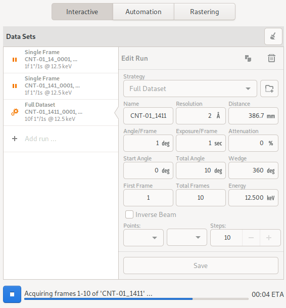
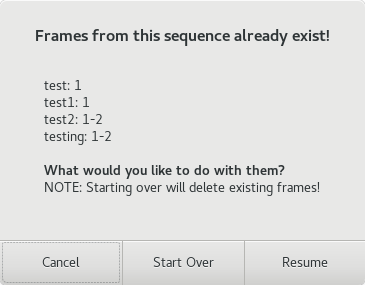
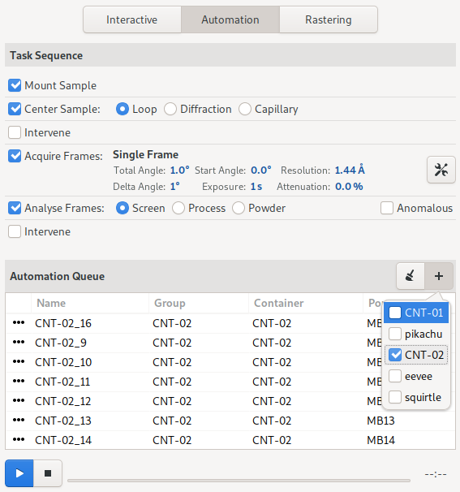
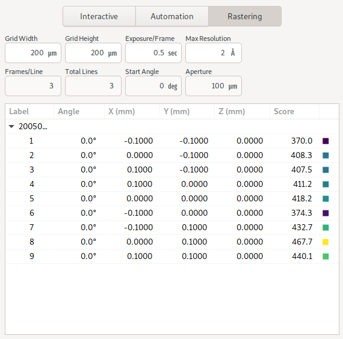
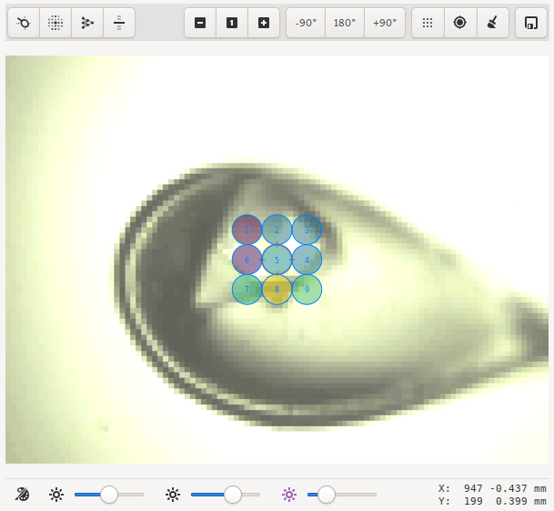
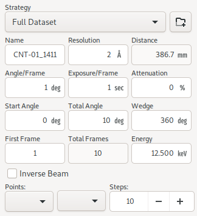
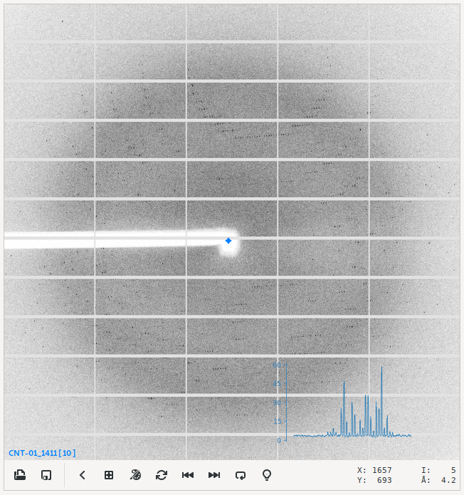

Data
The Data View is the primary view used for interactive, automated and rastering diffraction data acquisition.
{kind=link}
The view is divided horizontally into two regions – the Diffraction Image Viewer and the Data acquisition area, which can be toggled between the Interactive , Automated or Rastering data acquisition tools.
Interactive Data Acquisition
The interactive data acquisition tool enables acquisition of one or more data sets using a variety of settings and strategies on a single sample.
The interactive data acquisition tool combines a dataset run list with a dataset run editor. To create a new dataset run, click on the Add run … row of the dataset list. A new run will be created and the editor will point to it. Alternatively, while the editor is pointing to the Add run … row, a new run can be created by updating the parameters and clicking the Save button of the dataset editor.
To copy the parameters from an existing run, select the run from the list by clicking on it, and then click the copy icon at the top of the run editor. To delete the run, click the Trash icon at the top of the run editor.
Once runs have been defined, click the start button to initiate acquisition of all defined runs. The run-icon will be updated to indicate the state of the run – either acquiring, complete or pending. Completed runs can be removed from the list by clicking the clear button at the top of the page.
Completed runs will be ignored when the start button is clicked. To re-collect a completed run, select it and click save button to reset its state to pending.
You will be prompted each time, if images exist that may be overwritten.
This may result if an acquisition operation was stopped or if a run is being re-collected. If continuing a stopped run, choose the Resume option to resume data acquisition from where it stopped previously, and you want to preserve existing data. Choose the Start Over option, if you want to overwrite the existing frames and start data acquisition afresh.
Click the stop button while acquisition is in progress to stop it.
Note
Stopping data acquisition is exactly the same as Pausing it, thus there is no pause command. You can perform pause-resume cycles by stopping and then starting data acquisition, and selecting the Resume option when prompted.
Data Acquisition pauses automatically if the beam is lost, and resumes again automatically once the beam is available.
Automated Data Acquisition
The automated data acquisition tool enables acquisition of datasets using the same set of parameters and strategy on multiple samples in an automated manner.
The automated data acquisition tool combines a task sequence with a sample queue. To perform automated acquisition, configure the sequence of tasks to perform, update the associated parameters, select the samples for the queue, and then click the start button to start automation.
Samples can be selected by group, using the [ + ] button above the sample queue. Alternatively, individual samples can be selected using the Sample List tool on the Samples page.
The first column of the sample queue displays an icon corresponding to the state of the sample, either pending, in progress, or complete. Samples marked as completed, will be ignored each time the start button is clicked. They can be removed from the list by clicking the clear button above the sample queue. To recollect on a previously collected sample, make sure to re-select it, as collected samples are automatically deselected when complete.
Automation can be paused, resumed or stopped using the control buttons below the sample queue.
Rastering Data Acquitision
The Rastering tool allow users to perform diffraction cartography on mounted samples, in order to identify locations where the best diffraction can be obtained. The rastering tool is integrated with the video microscope allowing rastering parameters to be determined simply by drawing a grid on the sample video. Alternatively, rastering parameters can be directly provided using the rastering form fields.
To perform a run, update the parameters like exposure time and resolution settings, and then click the start button. Results for each point of the raster scan are then displayed on the table, and are also overlaid on the sample miscroscope.
Data Set Parameters
Data set parameters can be configured using the dataset form for interactive data acquisition or through the Acquire frames configuration tool for automated data acquisition. Note that some parameters may not be available depending on the data acquisition mode.
The set of available parameters are described below:
- Strategy
The strategy is a drop down list used to select default parameters for specific types of experiments. It also determines whether/how acquired frames will be analysed. Available strategies strategies are:
- Directory Template
This is actually a global preference which is also available through the MxDC preferences dialog. The value of this parameter determines how directories will be created to organize all acquired data in MxDC. It is highly recommended to use the default value.
- Name
The name of the dataset, which will be used to create file names by appending the frame number and the file extension. This field should be unique when collecting multiple runs at once.
- Resolution
The maximum diffraction resolution expected. This value determines the detector distance. In previous versions of MxDC, users were expected to provide the detector distance. Now the detector distance is calculated from the requested resolution, taking into consideration the energy and detector size.
- Angle/Frame (aka Delta)
The angle range for acquiring a single frame
- Exposure/Frame
The exposure time per frame. The exposure is linked to the Angle/Frame such that, the value will be adjusted automatically whenever the delta angle is changed, to preserve a constant exposure-rate.
- Attenuation
The percentage of beam intensity to attenuate
- Start Angle
The angular starting position for data acquisition
- Total Angle
The total angle range to acquire. For screening datasets, the total angle determines the number of frames acquired for each contiguous slice within the screen.
- Wedge
The wedge angle determines how much of a given run will be collected before proceeding to the next run when performing interleaved data collection strategies inverse beam or interleaved-MAD data acquisition. The default value of 360 degrees should be used otherwise. For example, to interleave 3 datasets A, B, C each into 3 slices will result in the following data collection sequence: A1, B1, C1, A2, B2, C2, A3, B3, C3. The wedge parameter can be different for each dataset but is not very meaningful if only collecting a single dataset at a time, unless the inverse beam parameter is active (see below). Also, the wedge parameter will be ignored if if it more than the total range of data collection.
- First Frame
The index number of the first frame to be acquired. Usually 1. Subsequent frames will be numbered starting at this value. To continue a stopped data acquisition, do not change this value. Rather, use the Resume option when prompted at the start of data acquisition.
- Total Frames
This field is not editable. It shows the total number of frames according to the defined parameters.
- Energy
The data acquisition energy. By default this field is set to the current beamline energy.
- Inverse Beam
In addition, collect the same amount of data already specified with an offset of 180 degrees. Use the wedge setting to interleave the direct and inverse portions of the dataset after a fixed data range in degrees. Dataset slices resulting from the inverse-beam option have priority over other slices resulting from the effect of the wedge parameter. Thus, inverse beam data slices will always be collected in pairs right after each other. For example for datasets A,B,C with inverse beam set only on A (e.g A’), if each dataset is sliced into 3 wedges based on the wedge parameter, the resulting sequence of data collection will be A1, A’1, B1, C1, A2, A’2, B2, … etc.
- Points
Enables selection of one or two saved points for data acquisition. If a single point is selected, the sample will be moved to that point prior to data acquisition. If two points are selected, data will be collected at a number of positions between (and including) the selected points. The number of positions is determined by the value of the Steps parameter. This method of data acquisition is also known as Vector Data Acquisition. These parameters are not available in the automated data acquisition mode and are only enabled if saved points have been defined using the sample microscope on the Samples page.
- Steps:
The number of steps to for Vector Data Acquisition. This parameter is only available if more than one point has been selected. It is not available in the automated data acquisition mode.
Note
Linked parameters are re-evaluated and validated everytime a parameter changes. However, parameters are only applied once the save button is clicked.
Diffraction Image Viewer
The diffraction image viewer is a full-featured viewer for diffraction images. All diffraction images collected within MxDC are displayed on the same viewer. This includes images from interactive and automated data acquisition, rastering and humidity control snapshots.
It is divided into the image area, which forms the bulk of the viewer, and a toolbar below the image area which provides tools for opening new images, saving PNG representations of displayed patterns, a back button for returning to the previous view, a tool for resetting the zoom, a pseudo-color toggle, a button for resetting the image, backward and forward navigation buttons for stepping through frames in a dataset, a follow-frame toggle for automatically loading the next frame in a sequence, and a button for displaying image header parameters. The toolbar also displays detailed information about the current mouse position over the image, such as pixel-coordinates, intensity and diffraction resolution.
Additional mouse gestures are available for manipulating the image. For example, the scroll button of the mouse can be used to adjust the brightness of the image. Left-clicking and dragging on the image will select a region of the image to zoom into. Right-clicking and dragging will select a line along which to integrate and display a 2-dimensional intensity profile. Middle clicking and dragging the image while zoomed-in pans the image.
The diffraction image viewer currently supports CBF, MarCCD Tiff, SMV (ADSC) and HDF5 formatted diffraction image files. In addition, XDS Spot files can be loaded and overlaid on any displayed image.